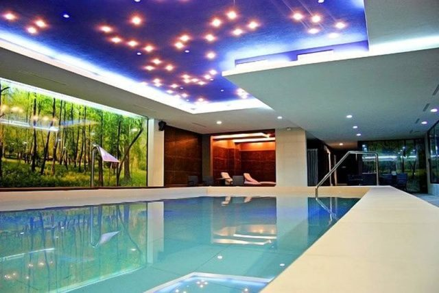
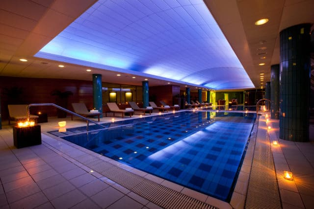
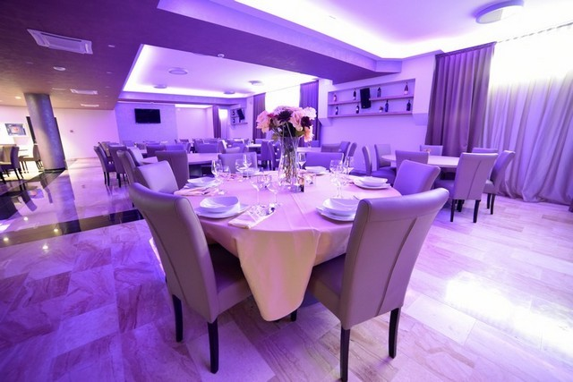
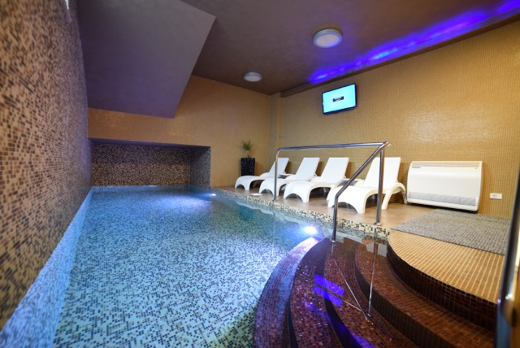
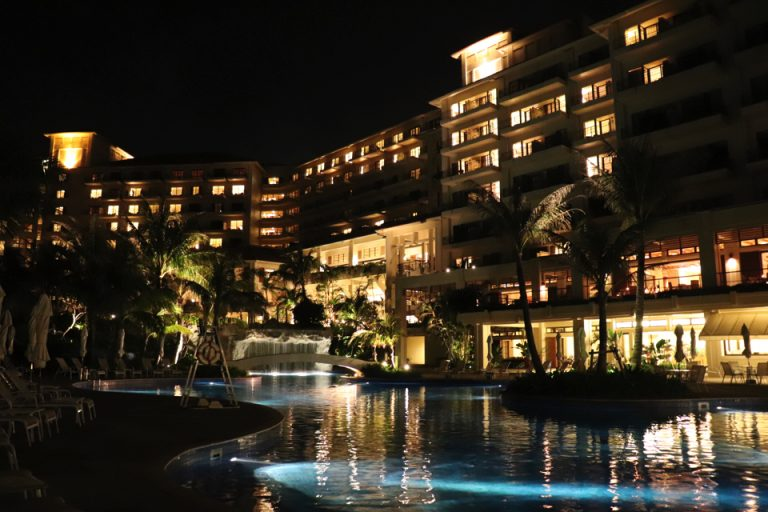
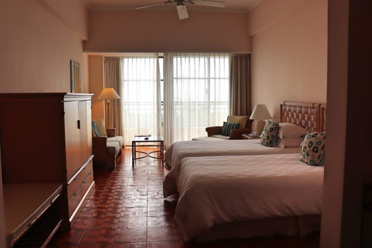

Džemala Bijedića 169 A www.sarajevohotel.ba Name “HOTEL SARAJEVO” d.o.o. Phone +387 33 973 250
Email
info@sarajevohotel.ba Category Number of rooms 66 + 3 apartments Room type Number of apartments
3
Total number.

Union Hotels continue with investments in their properties, all to offer their guests a
refreshed
and complete high-end congress offer. In the middle of August they will be re-opening their
wellness
centre newly run by Andreja Medvedič, the wellness master that has in the past also hosted
celebrities like Andie McDowell, Lou Reed, Pink, Ben Affleck and Petar Grašo.
 Uređenjem novog terminala Zračne luke Zagreb, Velika Gorica i Turopolje postale su
nezaobilazne destinacije turistima na njihovu putu u hrvatske ili europske metropole.
Smještajnih
kapaciteta sve je više, a i ponuda je sve bogatija. Royal Airport Hotel, smješten na samo pet
minuta
od središta Velike Gorice, u blizini Zračne luke, u svojoj ponudi, osim smještaja, nudi i
prostor za
organizaciju poslovnih ručkova, banketa, domjenaka i svečanih proslava tijekom cijele godine, a
posebice pred božićne i novogodišnje blagdane.
Royal Airport u ponudi ima apartmanski smještaj, te superior i deluxe sobe. Hotelski sadržaji,
uz
salu za svečane prigode, uključuje i konferencijsku salu, restoran, caffe bar, unutarnji bazen i
saunu. Restoranski à la carte meni obuhvaća ponudu tradicionalne hrvatske hrane i mnoštvo drugih
jela, a cijene su prilagođene ovisno o individualnim željama gostiju.

“The Busena Terrace” is a luxury resort hotel located in Cape Sena, Nago City. The hotel has an
outdoor pool, indoor pool, 8 restaurants, and Busena Beach right in front of the hotel.

The atmosphere of the room was refreshing and bright based on white. It had a tropical feel. The
entrance is wide and you can’t see the room right after you open the door. The room was very
spacious.